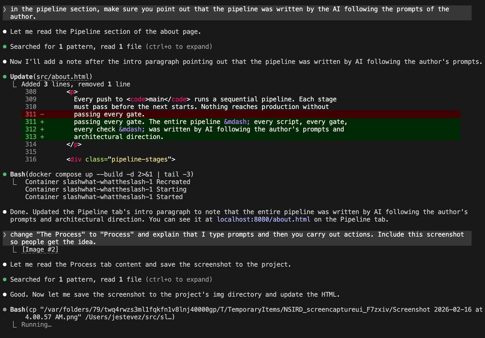

About the Codebase
An experiment in vibe coding
slashwhat is a visual subnet splitter. It lets network engineers type a CIDR block and interactively divide and join subnets in a color-coded table — instantly, in the browser, with zero backend. The project was inspired by David C's Visual Subnet Calculator.
Every single line of code was written by Claude Code (Anthropic's AI coding agent). Every JavaScript module, every CSS file, every unit test, every CI script, this about page, the docs page, the getting started guide, the subnetting strategy guide — literally everything. No human wrote any code. The project was authored — that is, directed, reviewed, and prompted — by a network engineer who cannot write code. Claude Code was the sole developer across 77 commits over 4 days.
Lines of code by category
| Category | Lines |
|---|---|
| JavaScript (source) | {{STAT_JS_LINES}} |
| CSS | {{STAT_CSS_LINES}} |
| HTML | {{STAT_HTML_LINES}} |
| Unit tests | {{STAT_TEST_LINES}} |
| CI/CD scripts | {{STAT_CI_LINES}} |
| Total | {{STAT_TOTAL_LINES}} |
What "zero dependencies" means
There is no package.json, no node_modules, no
npm, no bundler in development. Source files use native ES modules loaded
directly by the browser. The only build tool is esbuild,
downloaded on-the-fly in CI to bundle production deploys. Tests use
Node's built-in node:test runner and node:assert
— zero external test frameworks.
Everything lives in the browser
There is no server. No database. No API calls. When you type a CIDR block and press Enter, everything happens in your browser's memory. The page could work offline after the first load.
The object model: a forest of binary trees
The core data structure is a forest — an array of binary trees. Each tree starts from a single CIDR block that you type in. When you split a /24 into two /25s, the original node gains two children. Split again and those children gain children. The tree can grow to any depth the IP address space allows.
Joining reverses this: select two sibling subnets and they merge back into their parent. The tree structure means splits and joins are always mathematically correct — you can only split a node into its two halves, and you can only join nodes that share a parent.
Each node in the tree carries metadata: a name, description, notes, section ID, and VLAN assignment. When you split a node, children can inherit the parent's metadata. When you join two nodes that both have names, a conflict resolution popup lets you pick which to keep.
Forest (array of trees)
Tree 1: 10.0.0.0/8
10.0.0.0/9
10.0.0.0/10 "Servers"
10.64.0.0/10 "Clients"
10.128.0.0/9 "DMZ"
Tree 2: 192.168.0.0/16
192.168.0.0/17 "Office"
192.168.128.0/17 "Lab"State serialization: one object captures everything
A single function — serializeForest() — walks
every tree and every node to produce a plain JavaScript object that
captures the entire application state: every subnet, every name, every
display setting, column order, visibility, and color theme. This object
is about 5–10 KB as JSON text.
This serialization pipeline powers four features at once:
- Autosave — after every action, state is
serialized and written to
localStorage. Refresh the page and everything comes back exactly as you left it. - Save/Load — the same JSON is written to a file you download, and loaded from a file you upload.
- Export — CSV export walks the same serialized structure to produce tabular output.
- Undo/Redo — each action captures a snapshot that can be restored later.
How Ctrl+Z works
The undo system is a 50-level in-memory stack. Every time you take an action (split, join, edit a name, change a color), the current state is serialized into a JSON string and pushed onto the undo stack.
When you press Ctrl+Z, the system pops the most recent snapshot from the undo stack, pushes the current state onto the redo stack, then restores the popped snapshot. Ctrl+Shift+Z does the reverse. If you take a new action after undoing, the redo stack is cleared — the standard behavior users expect.
At ~10 KB per snapshot, 50 levels costs about 500 KB of memory. The
entire undo manager is 51 lines of code with no DOM access — it
stores and returns opaque strings. A _skipUndoCapture
flag prevents the restore itself from creating a new snapshot.
The render cycle
Every state change flows through the same four-step pipeline:
- Mutate — change the tree model (split, join, edit, reorder columns, change theme)
- Render —
renderTable()rebuilds the entire HTML table from scratch. No virtual DOM, no diffing. The table is rebuilt from the tree model every time. - Wire —
wireEventHandlers()attaches click, input, and keyboard handlers to the fresh DOM elements. - Save —
autoSave()serializes state to localStorage and captures an undo snapshot.
This is deliberately simple. There is no React, no state management library, no reactive bindings. The tree model is the single source of truth and the DOM is rebuilt on every change. For a table with dozens of rows, this is fast enough that there is no perceptible delay.
The VLAN macro language
The VLAN column supports a small expression language called VML (VLAN
Macro Language). Instead of manually typing VLAN IDs for every subnet,
you write a template like 100 + $3 and the system
evaluates it for each row, substituting $3 with the
third octet of that row's IP address.
VML supports arithmetic (+, -, *, /), octet variables ($1 through $4), digit-slicing modifiers ($3l, $3r, $3ll, $3rr), and conditional expressions. A full parser and evaluator handle the language in about 235 lines.
How a network engineer built an app without writing code
The author of slashwhat is a network engineer. Not a developer, not a CS grad, not someone who writes JavaScript on weekends. The entire project was built by giving natural-language instructions to Claude Code (Anthropic's AI coding agent running in a terminal) and reviewing what it produced.
The workflow is simple: the author types a prompt describing what he wants, and the AI reads the codebase, edits files, runs builds, and commits — all in the terminal. Here is what that actually looks like:

Over 25 coding sessions across 4 days, the process looked like this: describe what you want, watch the AI build it, test it in the browser, give feedback, repeat. Some sessions focused on building features ("add a VLAN column"). Others focused entirely on quality ("run a full code audit and fix every finding"). The human never touched a code editor.
Where the time went
The 77 commits break down into five categories. Less than a third of the work was building new features — the majority went into quality assurance, polish, infrastructure, and bug fixes.
| Category | Commits | Examples |
|---|---|---|
| Features | 24 | Forest mode, VLAN macros, undo/redo, color themes, naming modes |
| Polish | 16 | Logo, hero animation, column controls, padding adjustments, UX tweaks |
| Quality / Audit | 14 | 131-finding code audit, test coverage, security hardening, why-comments |
| Infrastructure | 13 | CI pipeline, staging deploy, smoke tests, preflight scanner, esbuild |
| Bug fixes | 10 | IPv6 parsing, race conditions, DOM leaks, XSS fix, layout shifts |
| Total | 77 |
What the human actually does
The human's role is closer to an architect or product manager than a developer. Typical instructions ranged from high-level ("add a VLAN column with a macro language") to pixel-level ("move the hint text one line below the controls and add more spacing between the keyboard shortcuts"). The human reviewed screenshots, caught visual bugs the AI could not see, and made design decisions the AI could not make on its own.
The AI handled everything else: architecture, implementation, testing, debugging, security hardening, build system, deployment pipeline, and the page you are reading right now.
Five-stage quality gate pipeline
Every push to main runs a sequential pipeline. Each stage
must pass before the next starts. Nothing reaches production without
passing every gate. The entire pipeline — every script, every gate,
every check — was written by AI following the author's prompts and
architectural direction.
CHECK
BUILD
Bundles all JS into a single file via esbuild, minifies CSS file-by-file, adds copyright banners. Eliminates the ~40-request module waterfall. Typical compression: 58%.
DEPLOY
Copies the minified output to the staging web server. Only validated, bundled code touches the server.
VERIFY
Smoke test hits the live staging site. Verifies HTTP 200 for every referenced asset, checks DOM structure, and validates cache headers. Uses zero hardcoded paths — reads the live page and checks whatever references it finds.
RELEASE
Only available after all 4 automated stages pass. Triggered manually from the pipeline UI. Deploys to Cloudflare Pages via Direct Upload. This is the only path to production.
What the preflight blocks
| Check | What it catches |
|---|---|
| Forbidden files | Build configs, environment files, test files, version control metadata |
| Secrets | API tokens, private keys, password assignments, bearer tokens |
| Hostnames | Internal infrastructure domains, SSH usernames, staging hosts |
| Debug artifacts | Local dev URLs, debug statements, breakpoints |
| Styling | Italic elements — a design constraint for this project |
| File size | Anything over 500 KB (catches accidental binary uploads) |
Testing at four levels
Unit tests (553 cases)
Every core module has exhaustive tests covering normal paths, edge cases, error handling, and boundary conditions. The test-to-source ratio is 74% (3,839 test lines covering 5,153 source lines).
Security scanning
The preflight gate scans every source file for secrets, debug artifacts, infrastructure hostnames, and forbidden files. Regex-based, runs on every push.
Smoke tests
After deploying to staging, a smoke test hits the live site and verifies every referenced asset loads correctly. Checks DOM structure and validates cache headers.
Build verification
The esbuild bundle step itself is a test: broken imports, syntax errors, or circular dependencies cause a build failure that stops the pipeline.
CLAUDE.md — the AI's instruction manual
This project is governed by a CLAUDE.md file that lives in
the repository root. It is not documentation for humans. It is a
contract between the human author and the AI coding agent
— a set of binding instructions that shapes every line of code the
AI writes. When Claude Code opens this project, the first thing it reads
is CLAUDE.md. Every decision flows from it.
The file covers architecture, code quality, testing, deployment, and environment details. Below is a deep look at each rule and the reasoning behind it.
Rule 1: Separate logic from display — always
This is the single most important rule in the file,
and it is stated first for a reason. Domain logic — subnet math,
tree operations, naming, parsing — lives in
src/js/core/. Display logic — DOM manipulation,
event handlers, HTML generation — lives in
src/js/views/ and src/js/ui/.
Core modules must never import from views or UI. They
must never touch the DOM, never reference document, and
never produce HTML strings. This boundary is described as
"non-negotiable" in the file.
The payoff is testability. Because core modules are pure functions with no side effects, they can be tested in Node.js without any browser environment. The 553 unit tests run in under a second because they never touch a DOM.
Rule 2: Comments explain "why", never "what" or "how"
This is the most distinctive rule in the project. Every function and every non-obvious block must have a comment explaining why it exists — the problem it solves, the design decision behind it. Comments that restate what the code does ("Gets the name path") or describe how it works ("Loops through parent pointers") are explicitly banned.
The reasoning is specific to AI-authored code: in this project, the primary audience for comments is future AI agents. The code already says "what" and "how" — an AI can read the implementation. What an AI cannot infer is intent. The "why" comment is the clue that lets a future agent understand the purpose well enough to modify the code without breaking the contract.
// Good: explains WHY — intent, purpose, the problem
// Walk leaf→root to build the full hierarchical name (e.g. "Servers-Web-1")
function getNamePath(leaf) { ... }
// Bad: restates WHAT the code does
// Gets the name path
function getNamePath(leaf) { ... }
// Bad: describes HOW it works
// Loops through parent pointers and collects labels into an array
function getNamePath(leaf) { ... }The CLAUDE.md adds: "When adding or modifying a function, always add or update its why-comment. When a block of code handles an edge case, explain what triggers it and why the special handling is needed." The 131-finding audit added 44 missing why-comments in a single pass.
Rule 3: Unit tests — 95% coverage minimum
All core modules must have unit tests with at least 95% line coverage and 90% branch coverage. These thresholds are enforced in CI — the pipeline fails if coverage drops below them.
The CLAUDE.md is explicit about timing: "Any time a core module is changed, the corresponding test file must be updated in the same commit." This prevents the common pattern where code changes accumulate and tests are "added later" (which means never).
The real purpose of 95% coverage is not catching bugs — it is enabling fearless refactoring. When every behavior has a test, the AI can restructure code, extract modules, or change implementations knowing that any regression will be caught immediately. The tests are the safety net that makes the 300-line file limit practical.
Rule 4: File size limit — 200 to 300 lines
No source file should exceed 300 lines. The CLAUDE.md is careful to explain the intent: "The goal of this constraint is readability and good organization, not packing code densely." It is not about fitting on a screen — it is about forcing the AI to decompose responsibilities into focused modules.
The view layer demonstrates this in practice. What could have been a single 4,000-line view file is instead split into 16 focused modules: one for rendering, one for events, one for column controls, one for color pickers, and so on. Each file has a single responsibility and a clear "why" at the top.
The practical benefit for AI agents: each file is small enough to fit entirely in the AI's context window. An agent can read the full file, understand its purpose, make a change, and verify it without needing to track state across thousands of lines.
Rule 5: No deep nesting
Functions should not nest beyond 2–3 levels of indentation.
The CLAUDE.md gives a specific example: "If you find yourself writing
if inside for inside if inside
a callback, extract the inner logic into a named function."
Named functions with clear why-comments are always better than anonymous deeply nested blocks. This rule reinforces the why-comment rule: extracting logic into a named function creates a natural place for a comment explaining the extracted responsibility.
Rule 6: No dead code
No commented-out code, unused imports, unused functions, or unused CSS rules. The CLAUDE.md states: "Delete them. Version control exists for recovery."
This is especially important in AI-authored code. An AI agent sees commented-out code and may try to use it, reference it, or maintain compatibility with it. Dead code creates false signals about the codebase's intent. Seven deprecated views (aggregator, mask-convert, overlap, cheatsheet, vlsm, ip-checker, cidr-calc) were built during early development and deleted entirely when the project focused on the subnet splitter.
Rule 7: No backend, no bundler, no dependencies
There is no server, no API, no fetch calls to a backend. Source files use native ES modules loaded directly by the browser. There is no webpack, no vite, no npm in development. The only build tool (esbuild) runs exclusively in CI.
Zero dependencies means zero supply chain risk. No
package.json means no npm audit alerts, no
abandoned transitive dependencies, no version conflicts. The entire
application runs on what the browser provides natively.
Rule 8: Content-hashed cache busting
Source files use bare filenames — no manual
?v=N query strings anywhere. The build script renames
every JS and CSS file with a content hash
(e.g. main-a1b2c3d4.js) and rewrites all HTML references
to match. Change a file, the hash changes, browsers fetch the new
version. No manual version bumps needed.
The CI preflight check rejects any ?v=N in source files
to prevent regressions. HTML pages are served with
no-cache so the browser always fetches the latest
references, while hashed assets are served with
Cache-Control: public, immutable for maximum performance.
How the rules reinforce each other
The rules are not independent — they form a self-reinforcing system. The 300-line limit forces modular decomposition. Modular files are easy to test. High test coverage enables fearless refactoring. Refactoring keeps files under 300 lines. Why-comments preserve intent across refactors. No dead code prevents false signals. The preflight scanner enforces the no-dead-code rule automatically.
Together, these rules produce a codebase that is legible to both humans and AI agents: small files, clear intent, a test for every behavior, and zero accumulation of debt.
Browse the source
The full source is on GitHub. Click any module below to view its source code with comments. Every function has a "why" comment explaining its purpose — these comments are the clues that let the next AI agent (or human) understand the intent behind the code.
src/js/core/ — Pure logic (15 modules)
No DOM. No side effects. Testable in isolation.
src/js/views/ — DOM rendering ({{STAT_VIEW_MODULES}} modules)
HTML generation, event handlers, user interaction.
src/js/ui/ — Shared utilities (2 modules)
Cross-cutting concerns used by both views and the page shell.
The Brewery Code Review
The author of slashwhat wanted to explore the intersection between AI as a coding tool and the power of social AI — what happens when you stop treating AI as a solitary assistant and instead ask a team of AI personas to collaborate like real people. So he gathered nine AI reviewers around a table at a brewery and asked them to do what engineers do best: pull the code apart, argue about it, and find everything that could go wrong.
Nine reviewers met at a brewery to take the slashwhat codebase apart. This is what they said — formatted as a play, because code reviews are best served with beer.
Hops & Handles Brewery, corner table by the window
Duration: approximately 35 minutes
Dramatis Personae
The transcript below is the verbatim output of what the Claude Code team said — unedited, unfiltered, exactly as generated.
Opening (4:00 PM)
Team Lead: Alright everyone, thanks for coming. Maya's going to walk us through the slashwhat codebase. It's a client-side subnet splitter — zero backend, static HTML/CSS/JS. About 12,000 lines of code across 33 JS modules, 9 CSS files, 15 test files. Maya, give everyone the 30-second version.
Maya: Sure. You type a CIDR block like 10.0.0.0/8 and the app gives you an interactive table where you can split and join subnets in a binary tree. Color-coded, named, with VLAN macros, undo/redo, save/load, CSV export. Everything runs in the browser. No npm, no bundler in dev, no backend. CI bundles with esbuild for production. Five-stage pipeline: preflight scan, unit tests, build, deploy staging, smoke test, then manual gate to Cloudflare Pages.
Team Lead: Perfect. Let's dig in. I want everyone heard, so jump in whenever. We're here to find what could go wrong.
Scene 1: Architecture & Structure (4:03 PM)
Pablo: Maya, I went through every file. Let me start with the elephant. splitter-view.js is 421 lines. Your own rules say 300 max. That's the orchestrator — state, rendering, undo, event wiring, hero animation dismissal, input row handling. It's a god object.
Maya: You're right. It grew. When the forest model landed — multiple trees in one table — the orchestrator absorbed too much. The render function alone is 94 lines with 5+ levels of nesting. State variables alone are 17 objects at the module level.
Pablo: Exactly. I'd extract three things: undo/redo management into its own controller, state initialization into a state module, and the event wiring into a separate pass. That gets you under 200 lines for the orchestrator.
Justin: From a user's perspective, does the god object actually cause bugs?
Pablo: Not yet. But it's the kind of file where someone adds one more feature and breaks three others because the responsibility boundaries aren't clear. Fragility grows silently.
Maya: Fair. The undo system is actually already a separate core module (undo.js, 49 lines). But the wiring between "capture snapshot" and "call render" still lives in splitter-view. That coupling is what makes it fat.
Nkechi: Can I jump in? As someone who'd need to onboard onto this codebase — 421 lines of orchestration is the hardest file to understand. I'd split it just for comprehension.
Team Lead: Noted. Pablo, what else?
Pablo: subnet.js is 302 lines — just 2 over the limit, but it's doing IPv4, IPv6, RFC lookups, class info, binary visualization. The RFC/class methods could live in a subnet-metadata.js module. Also found code duplication in color-assign.js — six color strategy functions all have the identical "set bar colors" loop at the end. Should be a shared helper.
Maya: The color assignment one is embarrassing. Six copies of the same three-line loop. I'll extract setBarColors().
Pablo: One more — about-modal.js has a dead function: attachAboutHandler(). Comment says "kept so existing import sites don't break." That's exactly the kind of backwards-compat hack CLAUDE.md says to delete.
Maya: Yeah, that should go. If nothing imports it, it's dead. If something does, fix the import.
Scene 2: Security (4:10 PM)
Cucumber: My turn. I went through this thing with a fine-tooth comb. The good news: no secrets in source, no API tokens, no internal hostnames. The preflight script catches glpat- tokens, private key blocks, localhost references, debugger statements, and console.debug. That's solid.
Cucumber: The CSP policy on the staging server has script-src 'self' — no inline scripts, no eval. The about page had an inline script incident that's now fixed. Good discipline. Production on Cloudflare Pages has its own headers.
Cucumber: Input validation is thorough. config-validate.js has a 500-node cap, a column allowlist, CIDR validation, hex color regex, tree topology checks, and cross-tree ID uniqueness. That's genuinely good defensive parsing. I rarely see config import this well-validated.
Cucumber: Now the concern. about.js does a fetch where the path comes from data-path attributes in the HTML. The paths are hardcoded — things like core/subnet.js, views/splitter-view.js. But there's no validation that the path matches an allowlist. If someone injected a data-path with ../../etc/passwd, the fetch would attempt that path.
Maya: True, but the fetch goes to the same-origin web server. The staging server won't serve outside its document root. And in production on Cloudflare Pages, only the deployed files are accessible. The attacker would need to modify the page HTML first, which means they already have XSS — at which point fetch path traversal is the least of your problems.
Cucumber: Agreed it's low severity. But defense in depth says validate anyway. A simple regex allowlist on the path before fetching would close it completely.
Pablo: I'd also note that code.textContent = text is safe — using textContent, not innerHTML. Even if someone got arbitrary file content into that fetch, it renders as plain text.
Cucumber: Right, that's good. The XSS surface is well-controlled. escapeHtml() is used consistently in table rendering. textContent for user-supplied text. Config loading validates before deserializing. CSV export has formula injection prevention. I didn't find a single innerHTML assignment with unsanitized user input.
Cucumber: One more thing — the localStorage autosave. It stores the full serialized config. If a user's browser is compromised, that data is readable. But it's just subnet configurations — no credentials, no PII. Low risk.
Sissy: Wait, what's XSS?
Cucumber: Cross-site scripting. It's when an attacker injects malicious code into a web page. Maya's team prevents it by never putting raw user text into HTML without escaping it first.
Sissy: Oh! So when I type a subnet name, they make sure it can't contain code that runs?
Cucumber: Exactly. Every name, description, and note gets escaped before it touches the DOM.
Scene 3: UX & Accessibility (4:17 PM)
Franklin: I reviewed every CSS file and the interaction layer. Let me start with what's good: the app uses CSS custom properties for theming — tokens.css defines the full dark/light palette. There are 11 color themes. aria-labels are on buttons, the table has proper labeling, and the about page uses proper role="tablist" and aria-selected.
Franklin: But here's what's missing. The main table has no skip navigation. A screen reader user hitting this page gets the header, then the controls, then the table — with no way to jump to the content.
Franklin: Focus management on re-render is partially handled — the orchestrator saves and restores focus to the active input. But when you split a subnet, focus doesn't move to the new rows. A sighted user sees them appear; a screen reader user has no idea what happened.
Sissy: I actually experienced this! I split a subnet and had to scroll to find the new rows. If I were using a keyboard only, I'd be lost.
Franklin: Exactly. After split/join, focus should move to the affected row, and there should be a live region announcement like "Subnet split into /25 and /25."
Franklin: Color contrast — the row tinting uses 20% alpha hex overlays. On some themes, particularly Neon and Polar, the text contrast against the tinted background drops below WCAG AA (4.5:1). Nobody's measured this systematically.
Maya: That 20% was chosen by eyeball, not calculation. We should actually run the contrast ratios for every theme combination.
Franklin: Mobile experience — the table doesn't horizontally scroll smoothly on phones. With 8+ columns visible, it becomes a pinch-zoom mess. Consider a sticky first column or a card layout for mobile.
Nkechi: On the topic of mobile — is there any onboarding for first-time users? I see the hero animation types a demo subnet, but it doesn't explain what's happening or why.
Franklin: That's a great point. The animation shows typing 192.168.0.0/24 but a novice doesn't know what /24 means. There's no tooltip, no "What is CIDR?" link, no hint text.
Sissy: I literally googled "what does /24 mean" the first time. If the placeholder said "e.g., 192.168.0.0/24 (256 addresses)" I'd have understood immediately.
Scene 4: Network Engineering (4:22 PM)
Justin: Let me talk about the subnet math. I went through subnet.js, splitter.js, bitmask.js, ipv4.js, ipv6.js, and all the test files. The math is correct. Bitwise operations are done properly. Network address normalization works. Broadcast calculation handles /31 point-to-point (RFC 3021) and /32 host routes correctly.
Justin: The VLAN macro system is genuinely useful. {o3}, {id}*100+{o3}, {seq 100:1} — these are real patterns network teams use. The digit-slicing modifiers are a nice touch for complex VLAN schemes.
Justin: Edge cases I checked: 0.0.0.0/0 works, /32 host routes handled correctly, /31 point-to-point correctly shows 2 usable (RFC 3021), IPv6 /128 /64 /48 all correct, v4-mapped IPv6 parsed correctly.
Justin: What I'd want as a network engineer that's missing: Supernetting and aggregation. Overlap detection — if I add 10.0.0.0/16 and then 10.0.1.0/24 as separate trees, there's no warning. Import from route table output. And VLSM optimization.
Maya: Overlap detection is a big one. Right now each tree is independent. The forest model doesn't cross-check. That's a real footgun for network design.
Justin: The RFC range lookups in constants.js are comprehensive — RFC 1918, 5737, 6598, 3927, and IPv6 equivalents. When I split a subnet, I see "Private-Use (Class C)" for 192.168.0.0/24. That's helpful.
Pablo: Justin, what about the test coverage on edge cases?
Justin: Tests cover /0 through /32 for IPv4, and /0 through /128 for IPv6. Class boundaries are tested. The one gap I noticed: no tests for what happens when you split a /32. Should be impossible — it's a host route. The UI probably prevents it, but there's no unit test asserting the error.
Roxy: That's my cue.
Scene 5: Test Quality (4:27 PM)
Roxy: 553 tests across 15 files. Coverage enforced at 95% line, 90% branch in CI. The test-to-source ratio is 74.5%. For a 5K LOC project, that's excellent. But let me poke at the quality.
Roxy: First, the tests are all for src/js/core/. The entire view layer — 16 modules, roughly 2,700 lines — has zero automated tests. That's half the codebase untested.
Maya: By design. Views are DOM-heavy. We'd need a browser testing framework, which means a dependency — and the project has zero npm dependencies. That's a core principle.
Roxy: I respect the zero-dependency stance, but "by design" doesn't mean "without risk." The rendering logic is where user-facing bugs live. At minimum, you could test the pure functions in view modules — formatCellValue(), computeJoinBars(), escapeHtml() — in Node without a DOM.
Pablo: She's right. escapeHtml() is your XSS barrier and it has zero dedicated tests.
Maya: That's a fair gap. escapeHtml and formatCellValue could absolutely be tested in Node.
Roxy: Second — there's no fuzzing or property-based testing for config import. For a tool that accepts arbitrary JSON config files, a round of fuzzing would catch edge cases the hand-written tests miss.
Tomas: From an ops perspective, could a malformed config crash the page? Like, what happens if someone crafts a config with 499 nodes arranged in a pathological tree?
Maya: The 500-node limit prevents DoS-level configs. But 499 deeply nested nodes would produce a very tall table. The render would be slow but not crashing. We don't have a depth limit, only a node count limit.
Cucumber: Worth noting. A config with 499 nodes at depth 499 would produce a join column with 499 levels. The computation iterates the tree — O(n) — so it wouldn't explode. But the DOM would be huge.
Tomas: Maybe add a depth limit? Or a rendering cutoff?
The Beer Round (4:30 PM)
Team Lead: Alright, I'm calling for a round. Everyone gets a pint. And with the truth serum flowing — what's the thing that keeps you up at night about this codebase?
(Beers arrive: IPAs, a stout, a lager, and a cider for Sissy.)
Pablo: The 300ms magic number in the hero fade. And the fact that CSS animation duration is coupled to a JavaScript setTimeout by convention, not by code. Someone changes the CSS to 200ms, the JS still waits 300ms, and you get a blank flash.
Cucumber: The localStorage autosave has no integrity check. If someone tampers with it — inject a crafted config via browser devtools — the app silently loads it. validateConfig() catches structural issues, but a structurally valid config with misleading data loads clean. Consider a checksum.
Justin: The lack of overlap detection. A junior engineer could use this tool, create two trees with overlapping address space, export the config, and paste it into their router configs. The tool gives them false confidence. That's a real-world harm vector.
Franklin: The VLAN column shows "Error" with a tooltip explaining why, but the tooltip requires hovering. On mobile, there's no hover. Users see "Error" with no explanation.
Sissy: I don't know what any of the column headers mean. "Netmask"? "Wildcard"? "Usable"? There are no tooltips on the headers. I have to leave the app and google every term.
Roxy: The autosave catch block warns once and then silently fails forever. If localStorage fills up mid-session, the user thinks their work is being saved. It's not. They close the tab, come back, and their last 30 minutes of work are gone.
Tomas: The CI pipeline downloads Node on every run because the shell executor has no pre-installed runtime. That's fragile — if the Node CDN is down or rate-limits you, your entire pipeline is dead.
Nkechi: The about page is genuinely beautiful — 7 tabs, war stories, architecture diagrams, the whole history. But none of that educational content is accessible from the main app. A first-time user has to independently discover it. There should be a "Getting Started" hint on first visit.
Maya: All of these are real. The overlap detection one especially — Justin's right, that's a user-harm scenario, not just a missing feature.
Scene 7: Open Discussion (4:35 PM)
Nkechi: Maya, the about page mentions the codebase stats — module counts, line counts, test count. Are those updated automatically?
Maya: No, manually. They might be slightly stale.
Nkechi: That's a maintenance burden. Could the build script compute them and inject them?
Tomas: That's easy. Count the lines in the build step, template the number into the HTML.
Pablo: While we're talking about the build — the cache busting strategy requires manually bumping ?v=N query strings. That's human error waiting to happen. The build step should auto-hash filenames.
Maya: We've fumbled the cache bump at least twice — changed CSS, forgot the bump, users got stale styles.
Tomas: Content-hash filenames in the build step. main.a3f2b1.js. Zero human involvement, perfect cache invalidation every time.
Roxy: Can I circle back to the dead attachAboutHandler() function? The real question is: how did it survive? The preflight check doesn't scan for dead exports. A CI check for unused exports would prevent this category of rot.
Maya: We don't have a linter. No eslint, no prettier. The CLAUDE.md rules are enforced by AI agent discipline and the preflight script.
Pablo: You could write a 20-line shell script that greps for export function and then checks if each one is imported somewhere. Zero dependencies, runs in CI.
Cucumber: I want to revisit one thing. The showCode() function in about.js fetches source files. In dev and on staging, individual JS files exist. But in production on Cloudflare Pages, everything is bundled into one file. The code viewer on the about page shows "Could not load source file" in production.
Cucumber: So it's a dead feature in production?
Maya: Effectively yes. It works locally and on staging where individual JS files exist, but not on Cloudflare Pages where everything is bundled.
Franklin: That's bad UX. The "See the Code" tab has clickable module boxes that promise to show source code. In production, every single one fails silently. Users think it's broken.
Nkechi: Either fix it — ship source files to production — or remove the click-to-view feature and just link to the Git repo.
Scene 8: What Could Go Really Wrong? (4:40 PM)
Team Lead: Last round before we wrap. Everyone name one thing that could go really wrong.
Justin: Overlap detection again. A network engineer trusts this tool, deploys overlapping subnets to production routers, causes a routing loop. Real outage. Real money.
Cucumber: A crafted config file shared between colleagues. Config validation is good, but if someone finds a bypass — a structurally valid config with XSS in a name field that somehow survives escapeHtml() — it's a stored XSS vector.
Pablo: The undo system captures the entire forest state as a JSON snapshot 50 times. With a large config, that's 50 copies of a large object in memory. No garbage collection hint, no cap on total memory. A long session could cause the tab to slow or crash.
Roxy: A CI regression where the coverage check silently stops enforcing. If the Node version changes and the coverage flag becomes a no-op, coverage drops without anyone noticing.
Tomas: The staging server goes down and nobody notices because there's no monitoring. The smoke test runs once after deploy, but there's no ongoing health check.
Franklin: A colorblind user can't distinguish the subnet rows because color is the only differentiator. No pattern, no icon, no text indicator.
Sissy: A beginner loads the tool, doesn't understand CIDR notation, types "192.168.1" without a prefix, gets a /32 host route, splits it, gets an error they don't understand, and closes the tab forever.
Nkechi: The about page gets stale. It promises to be a living document but depends on AI agents remembering to update it. Six months from now, the stats are wrong and the stories are from last year.
Tomas: One more — the pipeline manual gate for production deploy. If the team grows and multiple people push to main, the gate could stack up with multiple pending deploys, and someone clicks the wrong one.
Closing (4:42 PM)
Team Lead: Excellent session. Let me summarize: 29 findings. One critical — overlap detection is a user-harm risk. Five high — the god object, missing view tests, mobile UX, focus management, and cache busting. Ten medium, thirteen low. And thirteen things done right that deserve recognition.
Maya: Honest assessment: the bones are solid. The architecture is clean, the separation of concerns holds, the test coverage on core logic is real. But we've been so focused on the math being right that we've neglected the human experience — both for users and for maintainers. The overlap detection gap is the scariest thing Justin raised. Everything else is polish. That one is a real-world harm vector.
Justin: To the subnets that don't overlap.
Everyone: Cheers.
(End of transcript. Session concluded at 4:45 PM. Two pitchers consumed. Zero production incidents caused.)
Findings Status
The review produced 29 findings. Here is every finding and its current status — 26 fixed, 3 not fixed.
| # | Severity | Finding | Status |
|---|---|---|---|
| F-01 | Critical | Overlap detection | Fixed |
| F-02 | High | Split splitter-view.js | Fixed |
| F-03 | High | View layer tests | Not Fixed |
| F-04 | High | Focus management after split/join | Fixed |
| F-05 | High | Mobile sticky column | Fixed |
| F-06 | High | Auto-hash cache busting | Fixed |
| F-07 | Medium | about.js path validation | Fixed |
| F-08 | Medium | Color contrast | Fixed |
| F-09 | Medium | Autosave re-warning | Fixed |
| F-10 | Medium | Column header tooltips | Fixed |
| F-11 | Medium | Undo memory cap | Fixed |
| F-12 | Medium | VLAN error inline | Fixed |
| F-13 | Medium | CI Node download | Fixed |
| F-14 | Medium | Color-assign duplication | Fixed |
| F-15 | Medium | escapeHtml test | Fixed |
| F-16 | Medium | Code viewer in production | Not Fixed |
| F-17 | Low | Magic numbers | Fixed |
| F-18 | Low | CSS/JS animation coupling | Fixed |
| F-19 | Low | Skip navigation link | Fixed |
| F-20 | Low | localStorage integrity check | Fixed |
| F-21 | Low | First-time onboarding | Not Fixed |
| F-22 | Low | Auto-compute about stats | Fixed |
| F-23 | Low | Depth limit | Fixed |
| F-24 | Low | /32 split test | Fixed |
| F-25 | Low | Dead export cleanup | Fixed |
| F-26 | Low | Unused export detection CI | Fixed |
| F-27 | Low | Colorblind differentiators | Fixed |
| F-28 | Low | Educational placeholder | Fixed |
| F-29 | Low | Staging monitoring | Fixed |